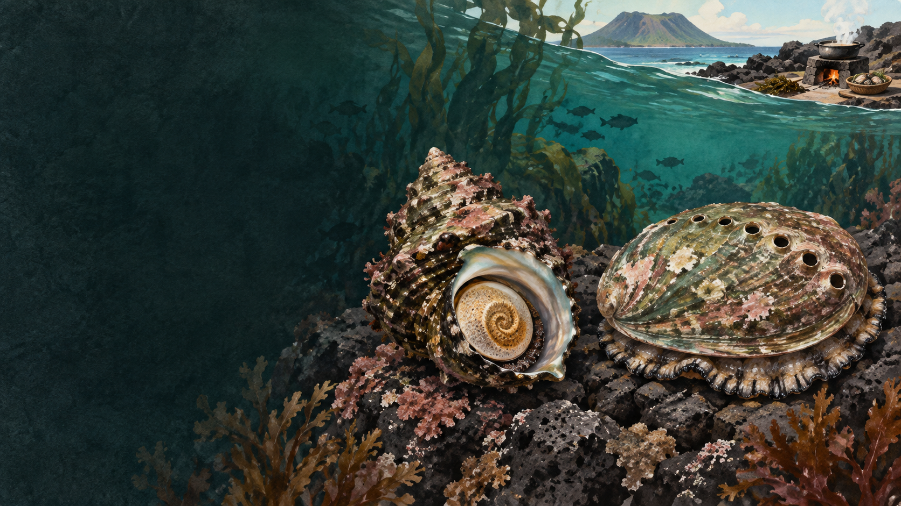

별도의 종
‘어린 전복’이 아니라 전복과에 속한 소형 종입니다.
 제주에서는 이 재료를
제주에서는 이 재료를
제주 음식의 생활문화를 바탕으로 제작한 기록화 · 생성 이미지
오분자기는 전복과의 작은 종으로, 제주 연안의 얕은 암반에 삽니다. 다 자라도 비교적 작으며 껍데기가 납작하고 호흡공의 형태와 개수, 표면 무늬가 일반 전복류와 다릅니다.
작다는 이유로 어린 전복이라 부르면 생물과 자원의 상태를 잘못 이해하게 됩니다. 제주에서는 뚝배기와 죽, 구이 등에 썼지만 생산량 감소로 오늘날에는 실제 원물과 원산지를 확인할 필요가 있습니다.
서식지와 채취, 선별과 조리까지 오분자기가 식탁에 오는 경로를 봅니다.
얕고 따뜻한 암반에 붙어 삽니다.
허용된 시기·크기·어장에서 채취합니다.
종과 크기, 손상 여부를 확인합니다.
껍데기와 살·내장을 분리하거나 통째로 씁니다.
뚝배기 국물에 감칠맛과 해조 향을 더합니다.
별도의 종이라는 사실과 납작한 몸, 자원 감소를 서로 연결해 읽습니다.
‘어린 전복’이 아니라 전복과에 속한 소형 종입니다.
껍데기 윤곽·표면과 호흡공이 구분의 단서입니다.
제주 연구기관이 종자 생산과 자원 회복을 추진하고 있습니다.
유명한 메뉴보다 왜 이런 재료와 방식이 제주 생활에 필요했는지를 먼저 묻습니다.
어린 개체라는 오해를 피하기 위해 형태·구멍·서식지·유통명을 비교합니다.
성체도 대체로 작음
종에 따라 더 크게 성장
상대적으로 납작하고 작은 호흡공
두껍고 큰 몸, 종별 호흡공 차이
제주 얕은 온대 암반
종에 따라 수심·분포 다양
뚝배기·죽에 통째로 쓰기도 함
회·구이·죽·찜 등
생활 이름과 시장 이름은 생물학적 종을 흐릴 수 있습니다. 도감에서는 껍데기 사진과 학명, 판매자의 표기를 함께 확인해야 합니다.
오분자기뚝배기라는 이름만으로 실제 오분자기 사용을 보장하지는 않습니다. 수급과 가격이 달라진 만큼 메뉴의 원재료 표기를 살펴봅니다.
오분자기는 전복의 성장 단계가 아니라 자기 생애를 가진 해양 생물입니다.
금어기·금지 체장과 공동어장 규칙은 바뀔 수 있습니다. 채취를 안내할 때는 최신 법령과 현장 고지를 우선합니다.
지역·가정·생산자에 따라 설명과 조리법이 다를 수 있습니다. 현장 인터뷰를 인용할 때는 당사자의 사용 동의를 받습니다.